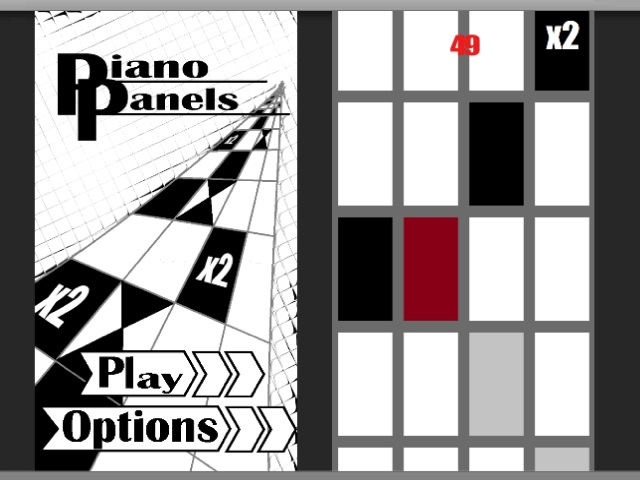

Piano Panels

Overview
Piano Panels is a 2d mobile game written in C# in the Unity Engine for Android. Piano Panels is a randomly generated rhythm game designed around the song Bad Apple!! by ZUN and remixed by Alstroemeria Records. The player needs to tap the black and special tiles in each row as the game speeds up over time along with dealing with the after effects of certain tiles.